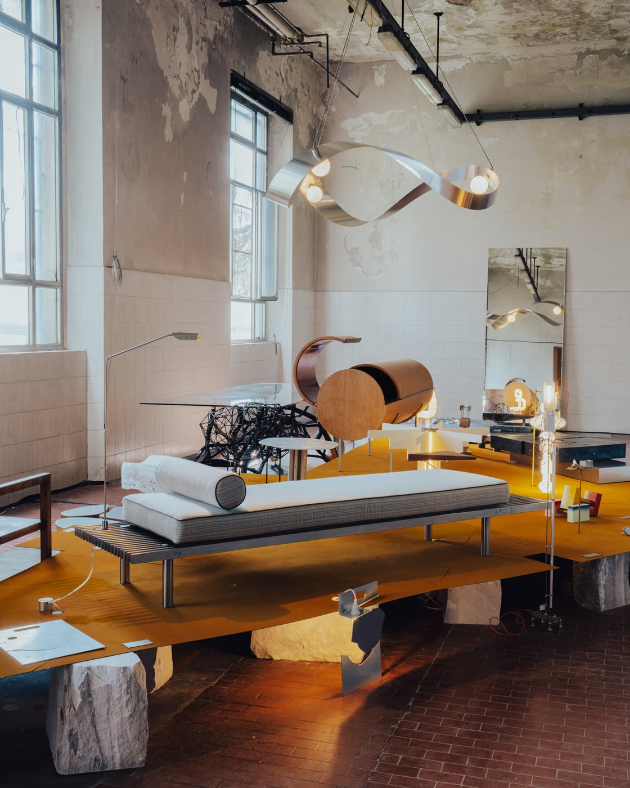
Latest | Latest updates and highlights from Wernacular
PROJECTS
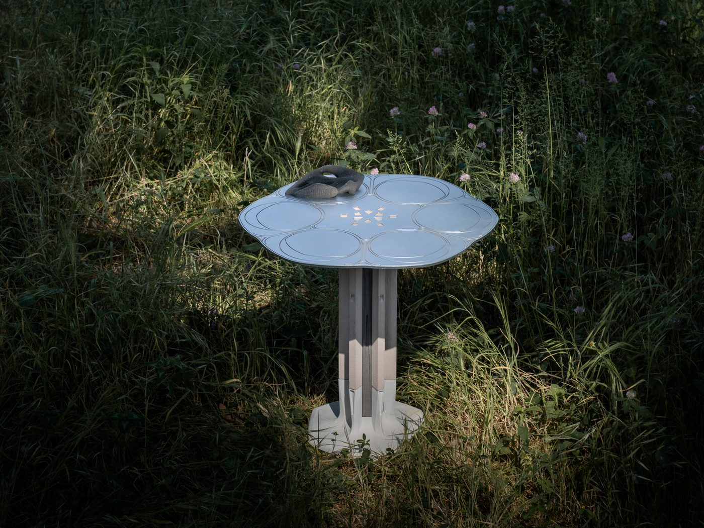
Nomadism Part 2 | Coalescence at Alcova, Milan Design Week - 2026
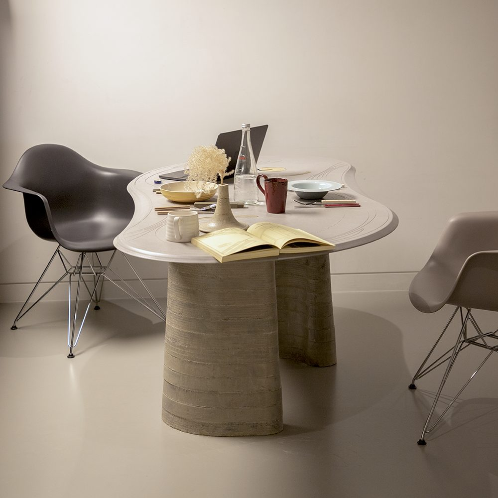
Trace | Parametric dining table, commission - 2025
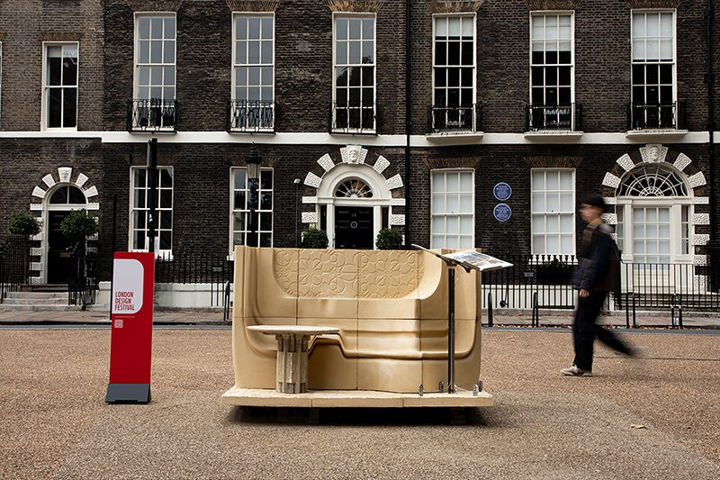
Impressions and Nomadism | Installation at London Design Festival - 2025
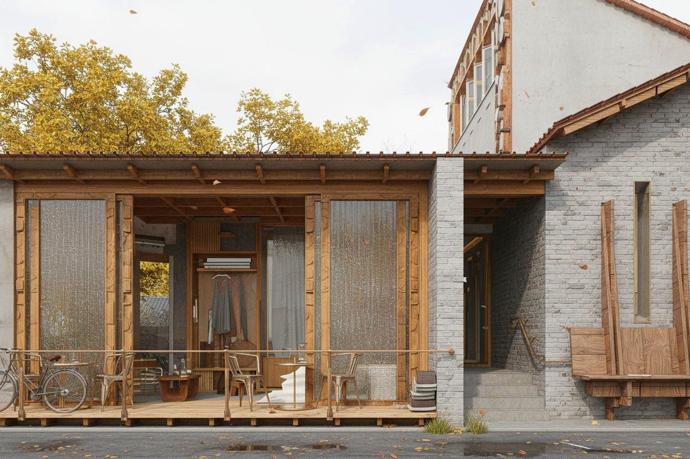
HOUSE 155 | Guest House Beijing - 2024
AND MORE...

ABOUT | Learn more about our studio philosophy
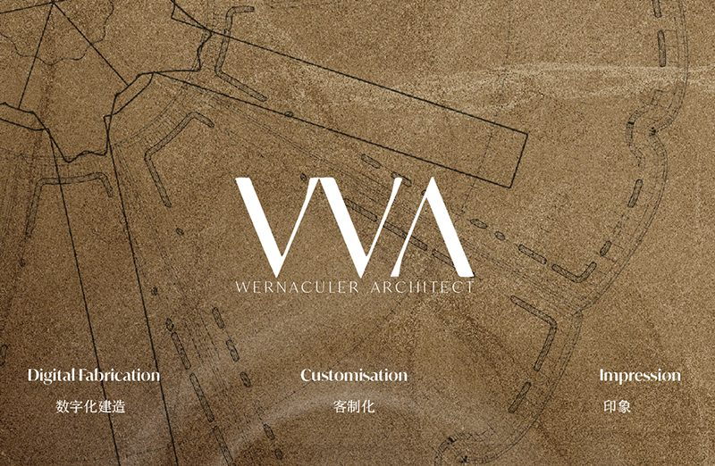
CONTACT | Get in touch with us
Digital Fabrication 数字化建造 Customisation 客制化 Impression 印象
Latest
Nomadism Part 2
Coalescence — AA × Alcova, Milan Design WeekWernacular's latest work was selected for Coalescence, presented by the AA and Alcova at Centro Ospedaliero Militare di Baggio, Milan, 20–26 April 2026 — reconstructing traditional mortise-and-tenon joinery through digital fabrication as a vessel of place-memory.
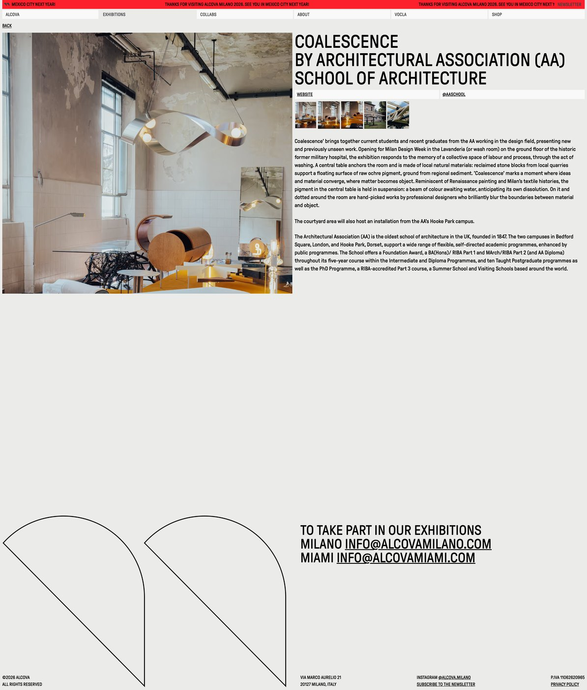
Coalescence on the official Alcova website: alcova.xyz/exhibitions/milano-2026/coalescence
Trace
Parametric dining table — MDF & cast concrete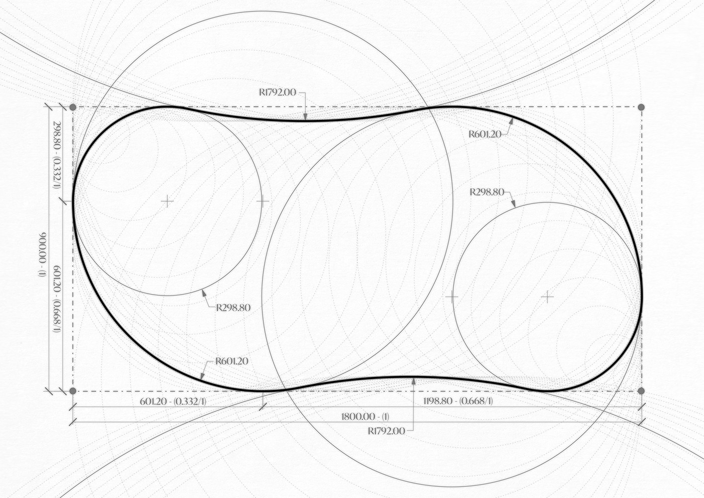
Impressions and Nomadism
Installation at London Design Festival, Bedford Square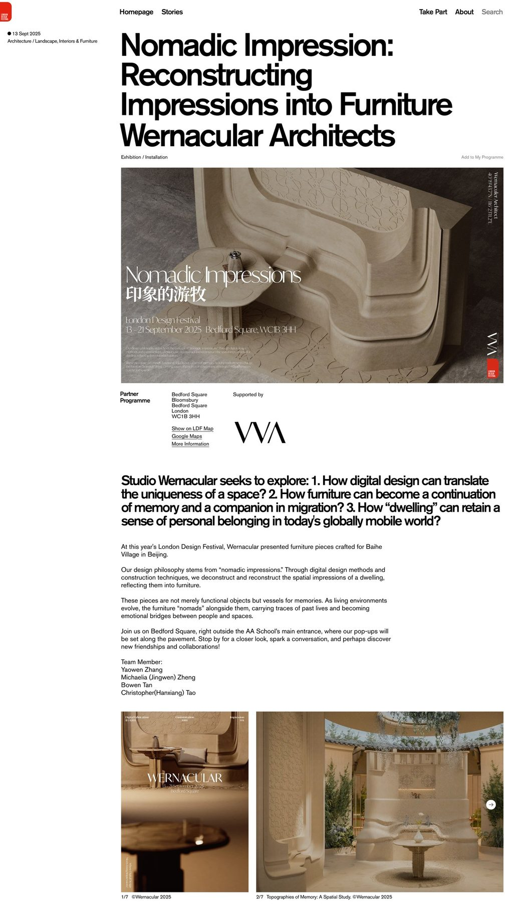
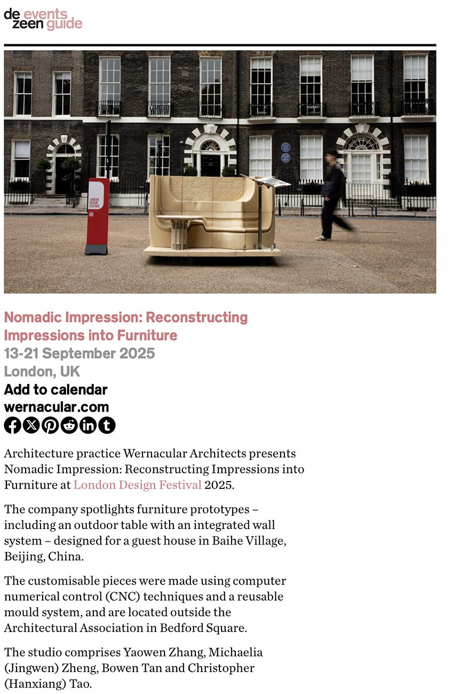
HOUSE 155
Guest house, Baihe Village, Changping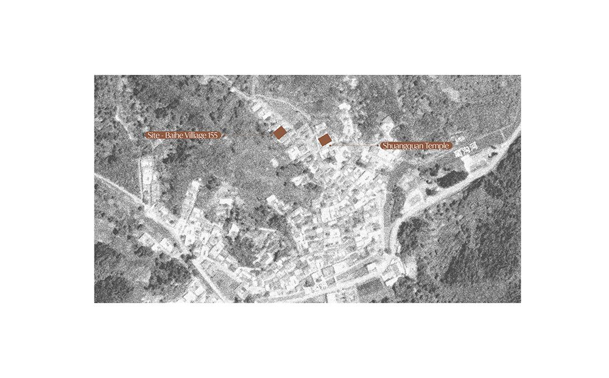
Impressions and Nomadism
Installation at London Design Festival - 2025
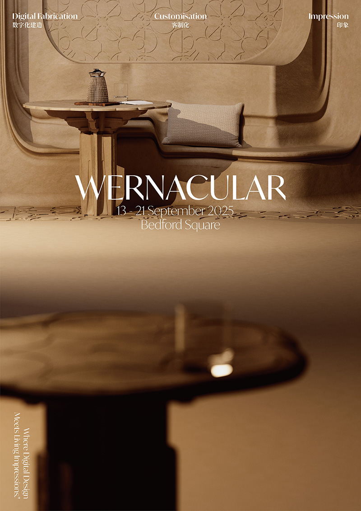
Introduction
At this year’s London Design Festival 2025, Wernacular presents a unique furniture project first conceived for Baihe Village in Beijing. The work embodies the studio’s ongoing exploration into how design can capture and carry memory, reinterpreting personal and spatial impressions through digital tools and fabrication.
The Concept
Wernacular’s practice is rooted in the intersection of technology, memory, and material culture. By employing digital design and construction methods, the team deconstructs the spatial identity of a specific place—such as a home or village—and reassembles it into the form of furniture.
These pieces are not merely functional objects; they serve as vessels of memory. Each carries the intangible essence of a dwelling, refracted into physical form. When their owners relocate, the furniture travels with them—becoming nomadic, migrating across geographies, yet always retaining a trace of the previous home.
In an age defined by global mobility, Wernacular asks: Can design become a bridge between memory and belonging?
Wernacular seeks to explore:
1. How digital design can translate the uniqueness of a space
2. How furniture can become a continuation of memory and a companion in migration
3. How “dwelling” can retain a sense of personal belonging in today's globally mobile world
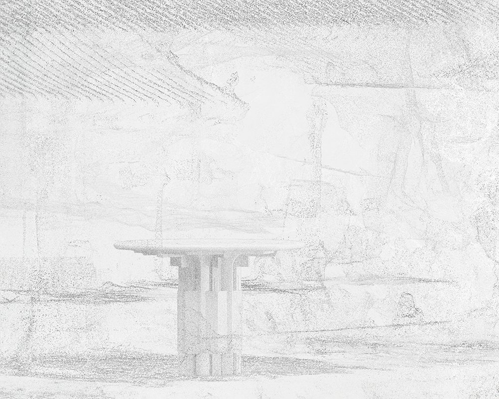
A Living Narrative
In October 2024, Wernacular received a commission from a client in Beijing who sought to transform several of his residences in Baihe Village into a multi-building hotel. The design journey began with the gradual transformation of one house, which would serve as the seed for the larger project.
During early conversations, the client emphasized the importance of local identity and asked that the design reflect the relationship between the residences and a nearby temple. This temple, though originally built for worship, had been repurposed as a school during his childhood before falling into disuse. For him, the site preserved vivid memories of his formative years.
Wernacular took this personal history as a starting point, aiming to use digital design and fabrication to capture and preserve these impressions, allowing the architecture—and now the furniture derived from it—to carry forward a fragment of memory that might otherwise be lost.
Fig 1.2 Explore the potential applications of this furniture project within the context of potential projects, where it can be utilized to highlight the local character within the forecourt design.
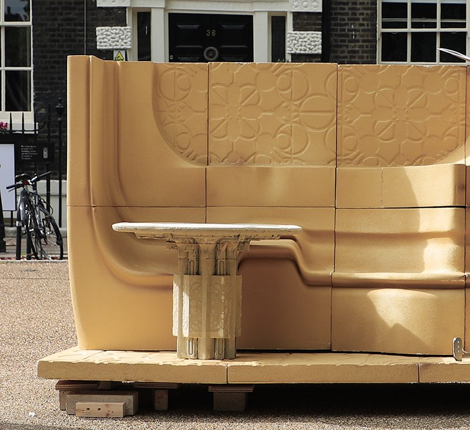
Digital Design & Making
The process begins with 3D scanning, capturing the subtle geometries and textures of the original environment. These scans serve as a digital archive of memory, which is then reinterpreted through computational design. To bring these digital impressions into material form, Wernacular employs CNC fabrication, allowing precision-making that bridges virtual data and tactile craft. The result is furniture that is both technologically rigorous and emotionally resonant.
“Our goal is to translate the intangible essence of a home into a form that people can live with and carry forward,” says the Wernacular design team. “Furniture becomes a vessel of memory—at once practical and poetic, deeply personal yet universally resonant.”

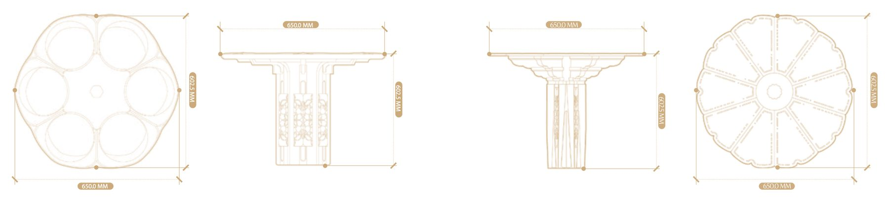
Team Members
- Yaowen Zhang
- Michaelia (Jingwen) Zheng
- Bowen Tan
- Christopher (Hanxiang) Tao
Cooperative Partners
- Tai He Ying Chuang
- Polcrete Ltd UK
- Xie's Technology Development Co. Ltd
Special Thanks
- Architectural Association - Digital Prototype Lab
- Steven (Shengtao) Xia
- Jennifer Yang
HOUSE 155
Guest House Beijing - 2024
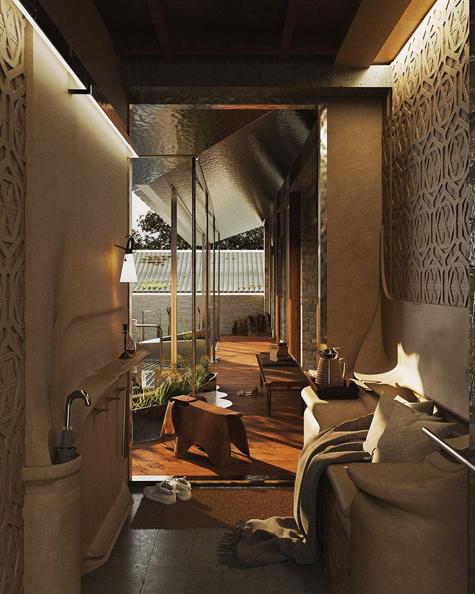
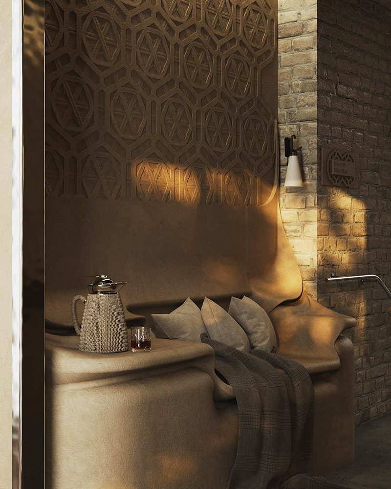
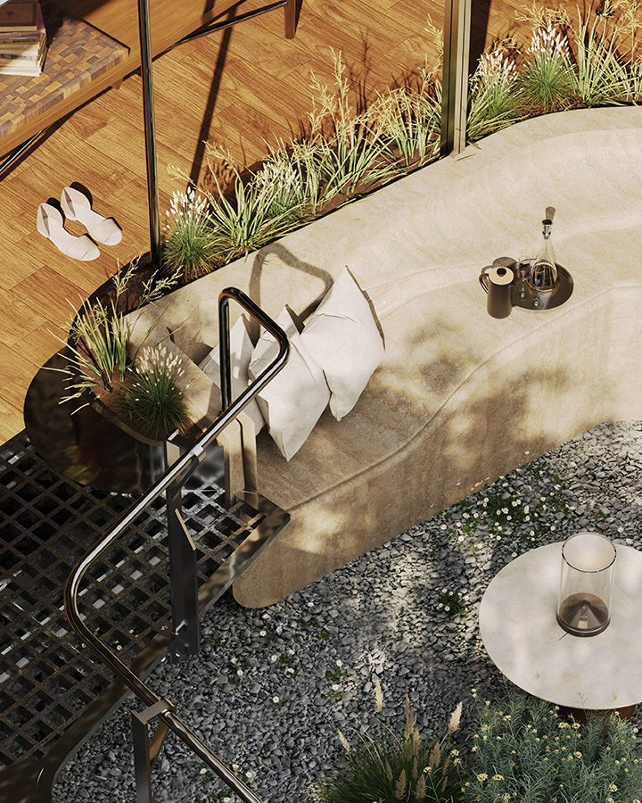

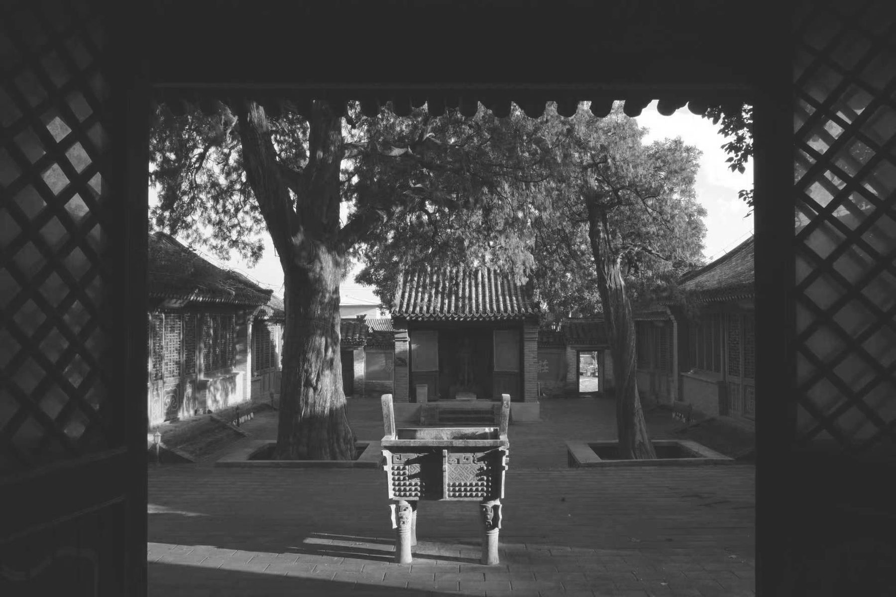
Baihe Village 百合村
Changping District 昌平区
Beijing 北京
China 中国
Nomadism Part 2
Team Members
- Yaowen Zhang
- Michaelia (Jingwen) Zheng
- Bowen Tan
Special Thanks — Coalescence Credits
- A project by the Architectural Association, with the support of AA Director Ingrid Schroder
- Conceived and developed by Christopher Pierce
- Curated by Nichola Barrington-Leach and Jingyi Deng
- Exhibition design by NVBL Architects
- Onsite Coordinator: Ye Jin Lee
- Production Assistants: Tal Friedman, Or Naeh, Mila Unkovich
- Press Partner: Sam Talbot
Trace
About
wer·nac·u·lar /wəːˈnak.jʊ.lə/ 文
noun. an architecture of place, remembered through a personal lens.
- W — three founders, one studio.
- vernacular — the language a place speaks.
- 文 — culture, writing, memory.
Digital Fabrication 数字化建造
3D scanning, computational design, CNC making — technology in service of memory, not spectacle.
Customisation 客制化
Nothing is a standard product. Every piece is recalculated for a specific person, space, and way of living.
Impression 印象
Buildings and furniture carry the trace of the places they come from — vessels of memory that travel with their owners.
Wernacular is an architecture and design studio exploring how contemporary expression can meaningfully merge with local culture. We approach architecture as a dialogue between memory, culture, and environment, creating work that is distinctive yet rooted in place.
Architecture is a container of atmosphere; place is alive through perception, memory, and movement.— after Zumthor & Pallasmaa
Our work revives cultural roots and everyday authenticity. Rather than following universal templates, we create architecture that responds to nature, society, and individual experience — harmonizing with its environment and resonating with human emotion.
Contact
with a conversation. 每个项目，都始于一场对话
About a place, a memory, and the way you live — we design from use, not shape.